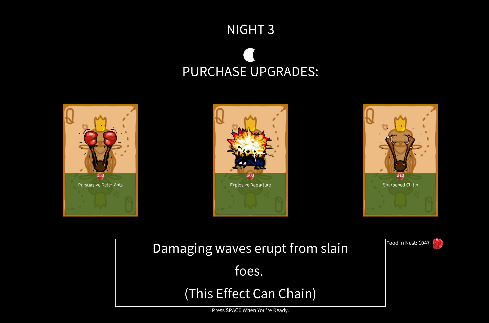
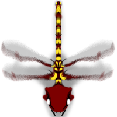
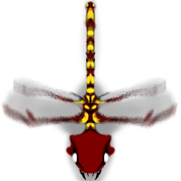
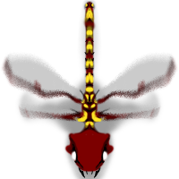

Queen of The Hill
Made From Scratch
Equal parts Rogue-Like, RTS, and Tower Defense, Queen of The Hill is an ant-themed Strategy/Adventure game I've been developing since 2024.
Designed to showcase my full skill set as a developer, every detail, including the game engine, was created by me.
The soundtrack, animations, story, art, sound effects, scripting, and behavioral algorithms... everything.
The game is programmed in Java. No generative AI was used for any part of it.
Aside from the P5 Processing library for rendering, every facet of this game was made by me and me alone.
The goal was to experience the entire lifecycle of a game, from start to finish, from scratch.
View The Steam Page
Getting the Steam API to work without a game engine has been challenging, so at the moment, the game runs on Windows only.
Thanks for your patience!
Throughout development I:
- Wrote over 20,000 lines of Java code.
- Created all the artwork in Photoshop, including 8 full-screen digital paintings and all sprite assets.
- Designed and iterated on game mechanics, organizing playtests to refine a fun and engaging gameplay loop.

- Animated particle effects, walk cycles, enemies, and UI elements.




- Programmed a realistic simulation of an ant colony, leveraging emergent behaviors.
- Developed performant algorithms for everything from collision detection to physics simulations and line-of-sight checks.
- Composed 10 original music tracks, ranging from moody ambience to epic boss themes.
Casual Gameplay
Moody Ambience
Boss Theme
End Credits
- Recorded and sampled dozens of sound effects, while developing the audio playback system.
"human" words
Finding a secret!
Squishing a bug
- Documented the entire development process using GitHub.
- Managed the project timeline, taking it from concept to a feature-complete playtest in 9 months, incorporating tester feedback throughout.
- Successfully made Queen of The Hill fun to play—arguably the hardest part.

 Depth camera and sonar interface
Depth camera and sonar interface
 Submarine interior layout
Submarine interior layout
 Camera view of the side of the submarine
Camera view of the side of the submarine
 Sonar and environmental threat view
Sonar and environmental threat view
 Unity development screenshot showing the submarine's interior layout
Unity development screenshot showing the submarine's interior layout
 Modelling of the monster in Blender
Modelling of the monster in Blender
 In-game render of the monster within the environment
In-game render of the monster within the environment